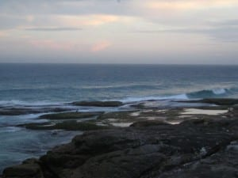

During the second week in August we had been saying goodbye to dad for a few days.
We said goodbye to dad for the last time on August 12th 2010.
That was the last time I could hold his warm hand or kiss his cheek. That was the last time we could hug him or touch him.
Though I remind myself that he is no longer suffering, I already miss him. I know there’s going to be some challenging days ahead.
That’s when I’ll have to try to remember that I can suck in some Bondi medicine by taking a walk along the beach or the cliffs. Doing this has helped me heal the pain of grief before. Bondi has that special energy for me.

The rocks between McKenzies Bay and Tamarama Beach